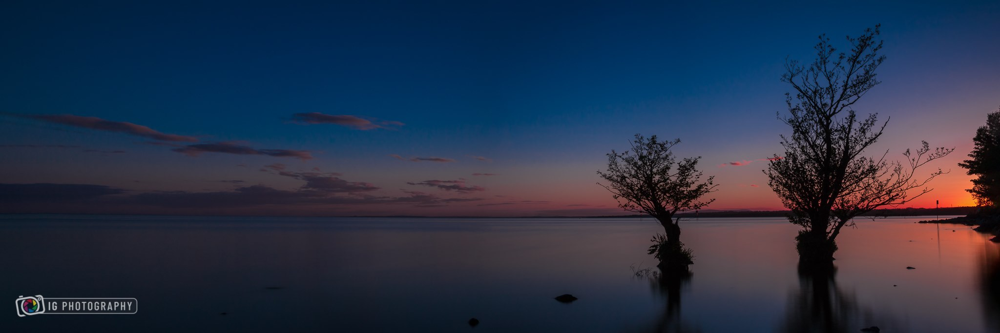
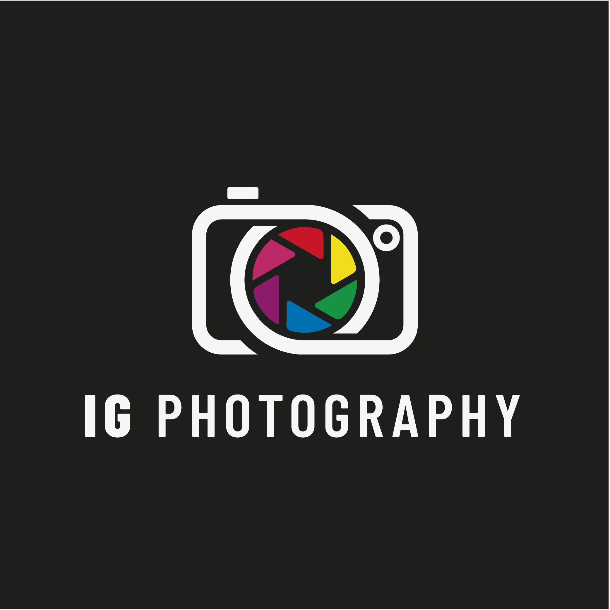
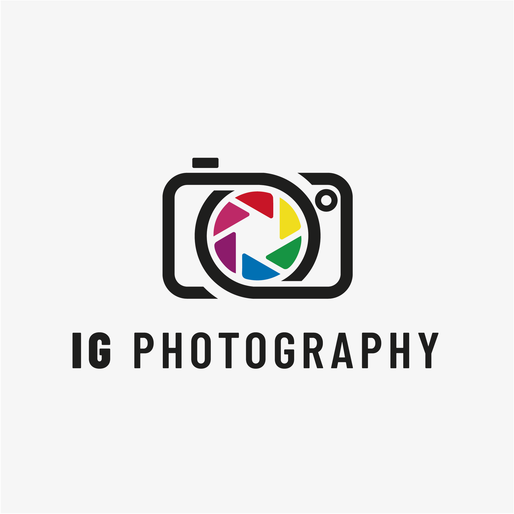
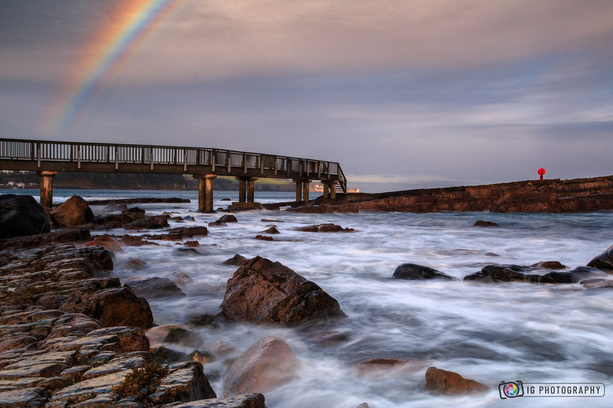

About The Project
I was approached by IG Photography about a rebrand on his logo, watermark and business card. The previous logo was a Shutterstock photo so lacked originality which did not represent IG Photography as a brand very well.


The Situation
I was asked to keep the rainbow spectrum in the lens from the original logo. I needed something that was strong but still simplistic enough that it wouldn’t get lost as a watermark.

The Process
I wanted to keep my design as simple as possible but still represent IG Photography as a brand. A lot of photographer logos I had seen during my research process were all very detailed which the client and I did not like. I came up with this ‘cut up’ design which worked very well around the rainbow lens.
